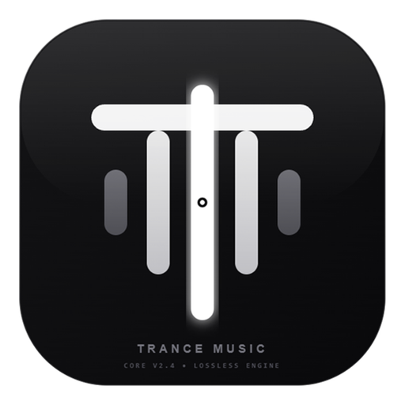

Shared with OpenMusic
A shared track
Trying to open OpenMusic…
Install, open OpenMusic, then this link again — it plays the track.

Shared with OpenMusic
Trying to open OpenMusic…
Install, open OpenMusic, then this link again — it plays the track.